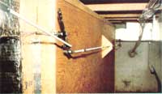

By the time you read this, MOTHER'S Eco-Village property will be getting ready to open its gates for the summer, and thousands of folks will have the opportunity to view our earth-sheltered house firsthand. And we hope the building will have interesting features that'll be relevant to nearly anyone's favorite energy-efficient housing concept.
During the ongoing planning process, you see, we've tried to remember that earth sheltering and/or passive solar design may not be every future homeowner's cup(s) of tea, so we've attempted-wherever practical-to experiment with an assortment of alternative heating and cooling techniques. In this issue, for example, we'll describe our hybrid-solar collection and storage system... a setup that-though not strictly necessary in a dwelling with the inherent energy efficiency of ours-has proved to be quite impressive.
NEAT AND ON THE ROCKS
Because of the extensive use of glazing on the south side of our house, two areas can-on sunny days-become warmer than is necessary: The sun-heated air tends to gather both in the greenhouse and at the peak of the second-story roof. Of course, the presence of 90°F-plus temperatures at those two locations doesn't pose a comfort problem for the structure's occupants (and it would be easy enough to vent the excess heat, anyway), but we simply couldn't bear to let all that warmth go to waste.
Consequently, we decided to set up a ducting system that could capture heat from both spots and either direct it to the floor area immediately or store it for future use. The accompanying flow pattern diagram should give you a good idea of how the air paths connect the different parts of the building. But essentially, during collection, warmth is pulled actively (by a 1/3-horsepower blower) from the greenhouse and from a triangular passageway that runs along the peak of the second-story ceiling.
The air is routed through ductwork (it's made from fiberglass board) to an enclosed rock storage area located beneath the east-end bedroom floor. The box was built from plywood (with a supporting framework) and insulated with polystyrene board, then the bottom of the container was lined with 8" X 16" concrete blocks . . . placed on their sides and spaced about an inch apart. Our crew handpicked a little over ten tons of approximately 3 "-diameter washed river rock to fill the storage bed to a level about 6 inches below the top.
To give our rock bed the capability of handling both storage and heating, we cut openings at the top and bottom of the east and west ends and then built plenums, from fiberglass ductboard, to encase each of the two pairs of openings. Each chamber has a valve inside which will join either its top or its bottom rock bed opening to the connecting ductwork.
With the system in its storage mode, air from the greenhouse is drawn through a passage that connects to the roof-peak duct, where it joins more solar-heated air that's pulled in through round registers set into the bottom of the nearly roof-length chamber. From there the combined BTU drop down to the east end of the rock bed, and the valve in that plenum directs the warmth into the top of the storage. As it passes between the rocks, the heat is left in the cooler material, and the air exits by slipping between the blocks . . . through the cores . . . and then out of the box. The cycle is completed once the air passes the blower and is pushed through the return duct to the greenhouse.
When the heat from the rock bed is needed in the home, the valve on the east end of the storage area forces air to enter the bottom of the box, while that on the west end makes it exit at the top. Meanwhile, yet another valve closes off the greenhouse return, thereby directing the warmth gathered from the rocks into the living area. Of course, the air that's entering the rock bed-in either the heating or the storage mode-comes from the roof-peak duct, and helps to prevent warmth from stratifying near the ceiling. At the same time, the passage connecting the greenhouse to the roof-peak duct is still open. But because the return air duct to the greenhouse is closed, pressure balance prevents the occurrence of any significant flow through that passageway. (Naturally, the various doors and windows in the greenhouse must be well sealed.)
If you're familiar with conventional forced air systems, you've probably noticed that our arrangement seems to work backwards. That is, instead of drawing cool air through a short duct, heating it, and then pressurizing a ductwork labyrinth with a blower, we're actually sucking air through the majority of our building's passages. The fellows who thought out and built the system were a bit concerned about how much of a pressure drop might occur when the moving air encountered the resistance presented by the rock bed, too, but measurements with a manometer have revealed that there's water depression of only 0.20" from one side to the other at an airflow rate of 1,000 cubic feet per minute.
It was our people's intention to make the controls for the system as stone simple (if you'll excuse the expression) as possible, and they've managed to arrange for the whole setup to rely upon one manually operated control. Of course, there are several "air handlers" on the market that will do everything this arrangement does (and more) without the homeowner's lifting a finger. What's more, we can easily envision ways that our system could be made more automatic... at some expense, however. On the one hand, our manual control does require a commitment from the occupants to stay in tune with the building's rate of solar gain. But on the other hand, it doesn't require the commitment of at least a thousand dollars that a more automated arrangement would demand.
THE PASSIVE LINK
While hooking up the hybrid collection system, we also elected to include a few passive links from the greenhouse to the living area. These include a pair of ducts running from the west end of the greenhouse back to the west bedroom. One of the passages ends next to an intake for the roof-peak duct, while the other merely spills air directly into the room. By controlling the former register and the one in the roof-peak duct itself, we can either draw air from the greenhouse for storage or central heating, or just let it flow into the room naturally.
We've also set a pair of floor-level vents against the front wall of the guest bedroom/den, to create a passive thermosiphoning link between the greenhouse and the living area. The system allows the heat to rise to the greenhouse roof. . . flow up the pair of ducts into the upstairs west bedroom . . . spill down the stairs into the living room . . . and return to the greenhouse through the floor-level vents in the guest bedroom/den.
It's a little early to estimate exactly how much solar boost MOTHER'S house will get from the system discussed here. Our early calculations indicate that the rock bed should be able to store about 3,500 BTU for each 1°F that we can raise its temperature above that of the home's interior. Thus a 20°F increase in that storage area could provide a very useful amount of backup heat to our low-loss building.
On the other hand, of course, if a home were to depend to any significant extent upon rock storage for its heat, the bed would obviously have to be quite a lot larger than is our display unit (30-ton setups aren't at all uncommon). Still, the success or failure of our mini-system won't be determined until we can see how well the rock storage will actually warm the house. And now that the basic energy systems for the building are in place, we're beginning to get some data from the thermometers placed around the interior.
However, as the sun rises higher in the sky each day, our thoughts are beginning to turn toward the problem of keeping cool this summer. So, in the next issue of MOTHER, we'll be going into some detail about how we plan to vent our building . . . including information on the solar chimney we'll use to give the natural airflow a big boost. Don't miss it!
This is part of a seven-part series on building My Mother's House.
Part I, Part II, Part III, Part IV, Part VI, Part VII
|
Hot air for our hybrid collection system is drawn form both the greenhouse and the round registers you see in the roof peak duct. |
 The system can be switched from storage to heating mode with a single lever. That control does, though, manage an array of linkage rods that move three valves. |
The system can be switched from storage to heating mode with a single lever. That control does, though, manage an array of linkage rods that move three valves. |
|
The solar-heater air enters the storage bed (shown here before completion) at the far end and passes between the rocks. |
As you can see, our earth-sheltered house is-at least externally-nearing completion. We do have several more important features to discuss in future issues, however. |
Left: Storage Mode Right: Heating Mode |